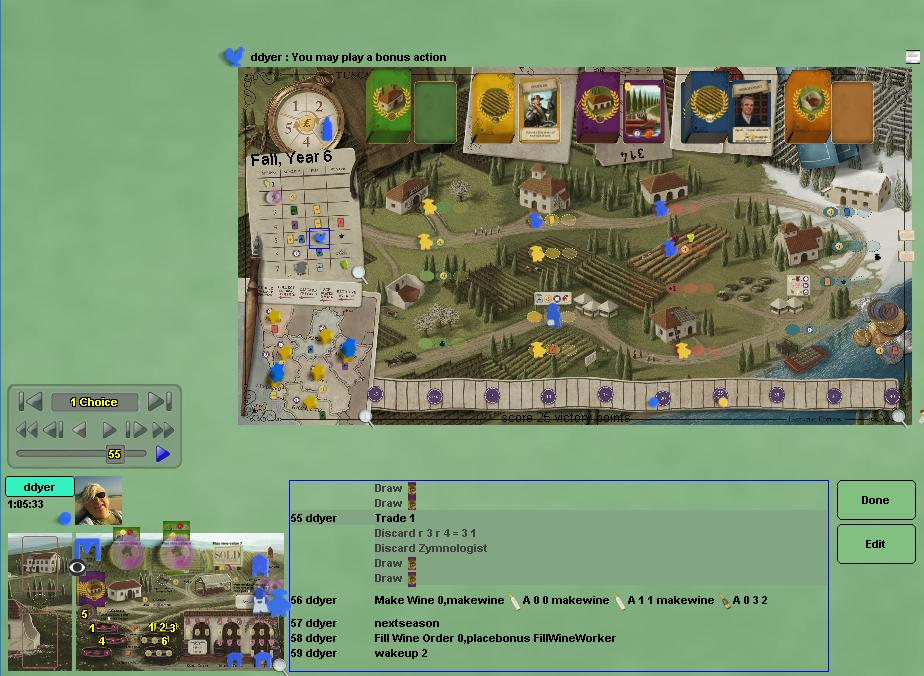

Viticulture
Viticulture is a medium-high complexity worker placement game,
loosely based on wine making. In the game, you plant grapes,
harvest grapes, make wines, and finally fill wine orders to score
victory points. As is common in worker placement game,
competition among workers for a limited number of action slots is the
main mechanism in the game. There's a lot of variability in the
game - there are about 200 cards (5 different types) and 11
types of
special workers. Consequently, you have to have a
long term plan, but have to adapt the plan continuously depending on
the cards you draw as well as the choices the other players make.
The
standard version presented here is "Tuscany Essential Edition", which is
even better than the original Viticulture. It includes special
workers, structure cards and the expanded board with four seasons, turn
order track and influence stars.
Boardspace also hosts a Viticulture Plus variation, where a number of optional rule changes can be selected from a mix-and-match menu of choices.
Robots: No Robot, but there is a very interesting solo play mode.
|

|